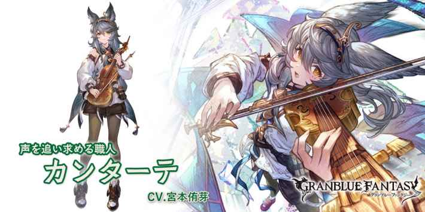

カンターテ
基本資訊
| 定位 | 攻擊 |
| 得意武器 | 樂器 |
| 種族 | 瘦耳族 |
| CV | 宮本侑芽 |
立繪
上限解放前

上限解放後

奧義
| ハロウィン･デッド･スクリーム | |
| 4.5倍風屬性傷害 敵方全體調律Lv+1(最多10/無法回復)×180秒 自己技能CD-1 |
技能
 CD:6 |
カプリース |
| 敵方1.5倍風屬性傷害×6次 ・弱體耐性-10%(累積/最多30%)×180秒 ・風屬性防禦-10%(累積/最多40%)×180秒 |
|
 CD:6 |
チャールダーシュ |
| 敵方全體4倍風屬性傷害 ・調律Lv+1(最多10/無法回復)×180秒 └每回合HP-1萬×調律Lv(最多10萬) └弱體無效以外的弱體效果必中 ・驅散1個強化效果 #調律Lv5以上時，發動2次 |
|
 無法再次使用 |
グラッペリ |
| 得意武器為樂器的風屬性角色 ・HP/弱體效果全部回復 ・技能CD歸0 給予自己グラッペリ效果(永久/無法消除) └同一個傷害技能(紅技)可以連續使用2次 #調律Lv10以上的敵人存在時才可使用，無法再次使用 |
被動技能
 |
ルーティア |
| #普攻後調律Lv7以上時 ・敵方1倍風屬性傷害×3次 ・自己奧義值+10% |
|
|
旅する楽器職人 |
| 隨著隊伍中得意武器為樂器的角色數提升技能性能 ・技傷倍率+0.1×人數倍(最多0.6倍) ・技傷上限+4%×人數(最多24%) #包含自己與後排角色 |
武器